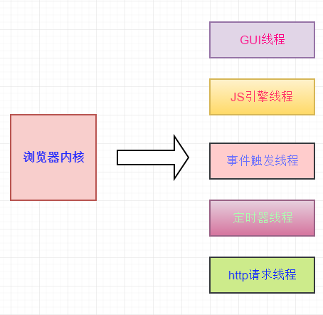

浏览器的多线程
这里可能产生误区，浏览器不是单线程的吗？错了，JS是单线程的语言。浏览器需要渲染页面，执行JS等，是多线程的。

GUI线程
职责：负责浏览器的页面html、css的构建，DOM树、renderObject对象，会计算出每个html的布局和解析css样式，最终呈现我们所看到的页面。
JS引擎线程
职责：负责JS脚本的执行与GUI渲染线程是互斥的，这也是为啥html页面前引入JS会导致页面渲染速度变慢。所以一般把JS放在html页尾。当解析html时，如果页面有JS的引入，JS引擎会把JS全部执行一遍，执行完毕后，GUI线程才会继续执行。
事件触发线程
职责： 事件触发时，负责把事件放入队列，等待特定的触发条件时再执行。
定时器线程
职责： 将setTimeout 和 setInteval执行函数在触发时放入队列等待执行。
http请求线程
职责: 监听请求状态变更，将相应函数放入队列，等待执行。
JS事件循环
事件循环
JS引擎的运行机制分为：执行栈和队列， JS的代码都在栈中执行，分为同步执行和异步执行，只有同步代码执行完毕后，才会执行异步代码。
JS引擎解析代码规则：
1.先把执行栈内的代码都执行一遍。
2.在执行的过程中，如果碰到触发事件(点击或者别的事件)、http请求(ajax请求)、延时执行(setTimeout，setInterval)就会依各自的线程进行监听，放入队列。
3.当执行栈空后，就会依次查找队列，把适时的代码放入执行栈，执行相应的代码。
一道常见的Event Loop 面试题
console.log('script start');
const date = new Date();
setTimeout(() => {
console.log('setTimeout1' + '------' + (new Date() - date));
}, 0);
setTimeout(() => {
console.log('setTimeout2' + '------' + (new Date() - date));
},0)
new Promise((resolve) => {
console.log('script1');
resolve();
}).then(function() {
console.log('script 2');
}).then(function() {
console.log('script 3');
})
console.log('script end');
直接看答案吧
script start
script1
script end
script 2
script 3
setTimeout1------6
setTimeout2------8 // 这里可能每次的值都不一样
在解释结果前还需要了解一下。JS引擎在解析JS代码时，会把任务源分为：微任务和宏任务；微任务包括：promise的回调、Object.observe，宏任务有：JS、setTimeout、setIntterval;
JS的设计是单线程的，在执行任务时，会把JS从头到尾依次解析，当碰到微任务和宏任务时，会把他们放入队列，等待执行。JS还在执行，在执行完后，就会去队列先把微任务依次放入栈内执行。这就是第一次循环，当把第一次执行产生的微任务执行完毕后就会把队列的宏任务拿出放入执行栈，依次执行，执行完后再循环。这样的执行顺序就叫事件循环，也就是Event Loop;结合线程的理解会更容易也会更深刻，所以即使setTimeout的延时设置为0，但他属于宏任务，等JS和微任务都执行完毕后的下一个事件循环才会执行。
然后再看上面的那道题，会不会瞬间感觉清洗脱俗。现在再来解析下答案。
1.JS是单线程的（为了解决一些操作DOM会产生无法描述的顺序问题等），代码依次执行，所以第一个输出 script start;
2.解析碰到setTimeout，这个属于宏任务，放入队列，等待下一次循环再执行。
3.promise会先输出同步的 script1 ，then的回调是微任务，放入执行队列。
4.输出 script end ;
到了这里就已经清空了一次任务栈，然后开始查找微任务。
5.把微任务的任务放入执行栈执行，输出script2,再输出回调的script3。
6.队列的微任务已清空完毕，开始下一次事件循环，把队列的宏任务放入执行栈内执行，输出第一个setTimeout1,setTimeout源码规定了最小值为4ms，所以不论执行速度，执行的结果最短都大于4ms。再输出setTimeout2.
整个事件执行完毕。还有一点，执行的顺序都会被线程监听。如我们平常所用的观察者模式一样，每个被放入队列的事件都会被打上标记，下次执行就不会乱。